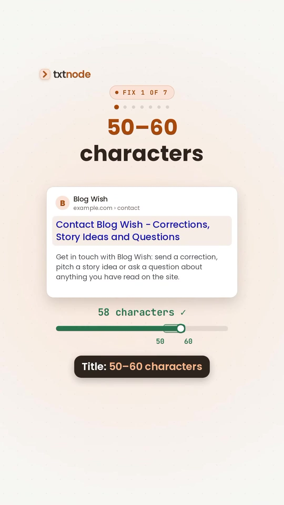
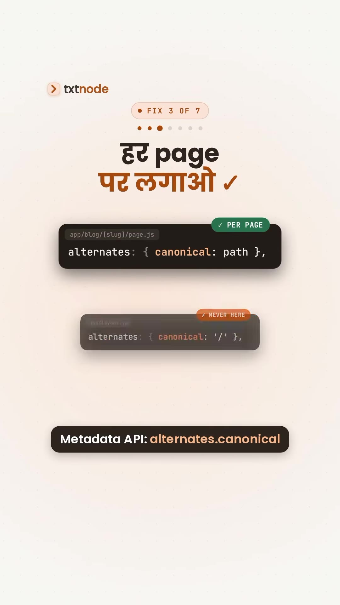
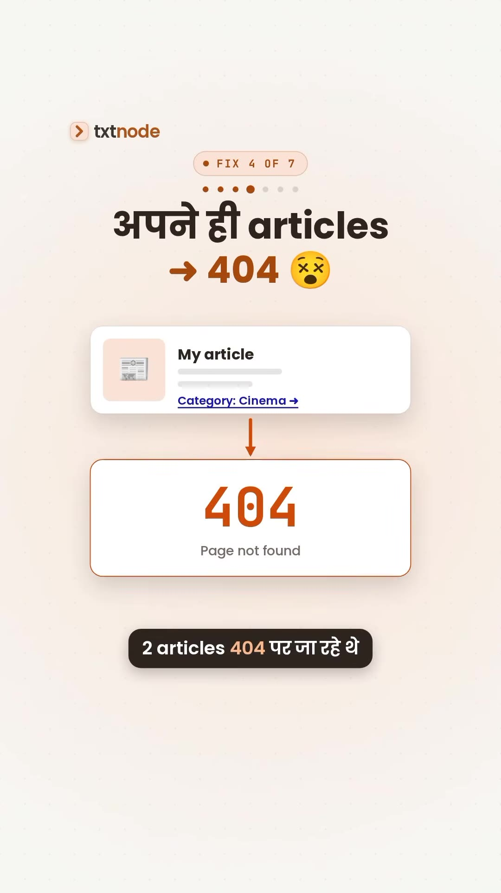

Executive Summary
Building modern web applications with Next.js App Router provides server-side rendering, streaming HTML, and dynamic metadata out of the box. However, deploying a Next.js application without a rigorous technical SEO audit frequently introduces hidden indexation and ranking penalties. In a production launch audit of 22 content pages, developer Abhay Vachhani discovered 9 major technical SEO defects caused by improper metadata inheritance, missing canonical definitions, thin taxonomy crawling, and unoptimized Core Web Vitals profiling.
This guide documents the comprehensive 7-step Next.js SEO checklist, technical code implementations for Next.js App Router (app/robots.ts, app/sitemap.ts, dynamic metadata, and JSON-LD schema), and critical pitfalls to avoid prior to public launch.
Core Visual Demonstrations



The 7-Step Next.js SEO Checklist
1. Title Optimization (50–60 Characters)
Search engines truncate title tags exceeding ~600 pixels (roughly 50 to 60 characters). Titles must be descriptive, keyword-aligned, and strictly formatted using Next.js metadata templates:
// app/layout.tsx
export const metadata: Metadata = {
title: {
default: 'TxtNode — Technical Writing Platform',
template: '%s | TxtNode'
}
};2. Unique Meta Descriptions (120–160 Characters)
Every route must define a tailored description between 120 and 160 characters. Duplicate or boilerplate descriptions degrade click-through rates (CTR) in search engine result pages (SERPs).
3. The Canonical URL Rule: Never in Root Layout
The Fatal Trap: Defining a static canonical URL in app/layout.tsx causes every subpage, article, and category in the application to declare the root domain (https://example.com/) as its canonical source. Google will subsequently de-index all internal routes as duplicates of the home page.
The Solution: Define dynamic canonicals either per-page via generateMetadata or set the metadataBase in the root layout and use relative paths:
// app/layout.tsx
export const metadata: Metadata = {
metadataBase: new URL('https://txtnode.com'),
};
// app/blog/[slug]/page.tsx
export async function generateMetadata({ params }): Promise {
const post = await getPost(params.slug);
return {
title: post.title,
description: post.summary,
alternates: {
canonical: `/blog/${post.slug}`,
},
};
} 4. Internal Link Auditing & Self-Referencing 404s
Dynamic routing often creates silent link rot when categories or tags reference nonexistent slugs. Crawlers encountering internal 404s waste crawl budget and downgrade site trust. Run automated crawl audits using tools like Screaming Frog or custom Playwright smoke tests before deployment.
5. Semantic Hierarchy & Image Alt Text
- Single
<h1>per Route: The main page title must be the sole<h1>element. Subsections must strictly follow<h2>and<h3>order. - Strict Alt Attributes: Use
next/imagewith meaningful descriptive text rather than decorative or empty strings.
6. Thin Taxonomy Pruning (The "Under 3 Posts" Rule)
Tag and category pages containing fewer than 3 published articles present "thin content" signals to search engines. If a tag or category page does not yet have substantive indexable value, prevent search indexing while allowing search bots to follow links:
// app/tags/[tag]/page.tsx
export async function generateMetadata({ params }): Promise {
const posts = await getPostsByTag(params.tag);
const isThin = posts.length < 3;
return {
title: `Articles tagged ${params.tag}`,
robots: {
index: !isThin,
follow: true,
},
};
} 7. App Router Native APIs: Robots, Sitemap & JSON-LD
Next.js App Router eliminates static XML sitemaps and txt files in favor of type-safe TypeScript endpoints:
// app/robots.ts
import { MetadataRoute } from 'next';
export default function robots(): MetadataRoute.Robots {
return {
rules: {
userAgent: '*',
allow: '/',
disallow: ['/admin/', '/api/private/'],
},
sitemap: 'https://txtnode.com/sitemap.xml',
};
}
// app/sitemap.ts
import { MetadataRoute } from 'next';
export default async function sitemap(): Promise {
const posts = await getAllPosts();
const postEntries: MetadataRoute.Sitemap = posts.map((post) => ({
url: `https://txtnode.com/blog/${post.slug}`,
lastModified: new Date(post.updatedAt),
changeFrequency: 'weekly',
priority: 0.8,
}));
return [
{
url: 'https://txtnode.com',
lastModified: new Date(),
changeFrequency: 'daily',
priority: 1.0,
},
...postEntries,
];
} Core Web Vitals Audit Tip
Never measure Core Web Vitals on npm run dev! The development server includes hot-module replacement (HMR), unminified bundles, and React dev tools overhead that report artificially degraded LCP and INP scores. Always run next build && next start or audit on an edge preview deployment before consulting Google PageSpeed Insights.